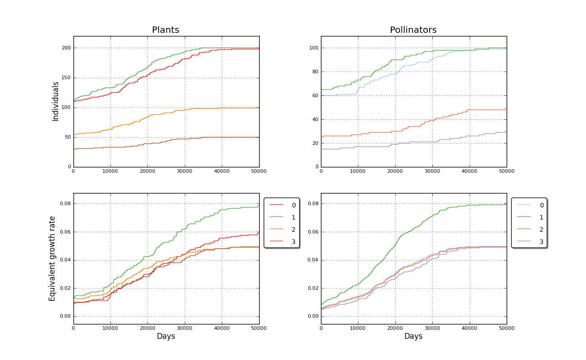

Binomial simulated mutualistic interaction. Input file: 4_05K_casiequilibrio   days: 50000<br>============================================================================<br>User Comment: Red por encima del minimo vital<br>Mutualist interactions enabled<br><br>Plants matrix: <a href='../input/4_05K_casiequilibrio_a.txt' target=_BLANK>4_05K_casiequilibrio_a.txt<a><br>Pollinators matrix: <a href='../input/4_05K_casiequilibrio_b.txt' target=_BLANK>4_05K_casiequilibrio_b.txt<a><br>Plant species: 4<br>Plant initial populations [110, 110, 55, 30]<br>Pollinator species: 4<br>Pollinator initial populations [60, 65, 25, 15]<br>Elapsed time 20.47 s<br><br>Created 2012-07-08 17:21:42.250000<br><br><br>Populations evolution picture<br><table border=0><tr><td></td></tr></table><P>